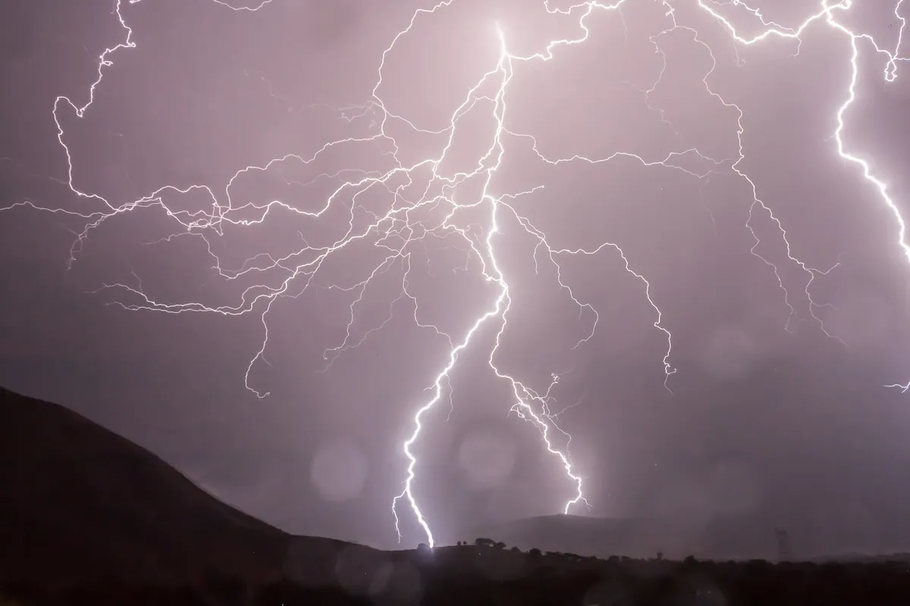
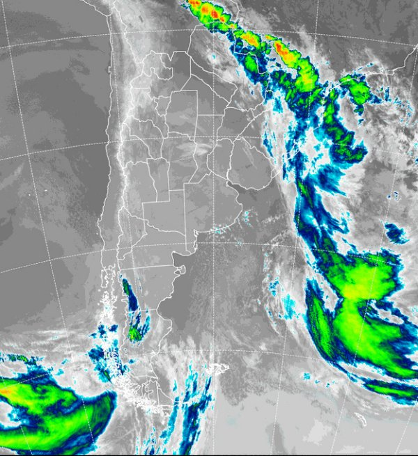

Buenos Aires: alerta amarillo del SMN por tormentas fuertes

El Servicio Meteorológico Nacional (SMN) lanzó un alerta amarillo por tormentas para esta noche y mañana a la madrugada en una vasta zona de la provincia de Buenos Aires.
En cuanto a las tormentas que se producirán en el centro, sudeste y este de la provincia de Buenos Aires, se aclaró que serán de variada intensidad, y solo algunas serán localmente fuertes. Aún así, se advirtió que habrá intensas precipitaciones en periodos cortos, fuerte actividad eléctrica, ráfagas intensas y ocasional caída de granizo.
El Sistema de Alerta Temprana del SMN indicó que las áreas afectadas son Azul, Rauch, Tapalqué, Benito Juárez y Tandil.
"El área será afectada por tormentas de variada intensidad, algunas localmente fuertes. Las mismas estarán acompañadas por intensas precipitaciones en cortos periodos, fuerte actividad eléctrica, intensas ráfagas y ocasional caída de granizo", se informó.
El SMN agregó que "se estiman valores de precipitación acumulada entre 15 y 40 mm, pudiendo ser superados de manera localizada".
El nivel amarillo de alerta implica que este fenómeno meteorológico puede tener “capacidad de daño y riesgo de interrupción momentánea de actividades cotidianas”.
Para el próximo trismestre el Servicio Meteorológico destacó que habrá lluvias por debajo de lo normal sobre Cuyo, Litoral y el este de Buenos Aires. Además, en La Pampa, el oeste bonaerense y el oeste de Patagonia hay mayores chances de que estas sean normales o inferiores a lo normales.
El tiempo en Buenos Aires

LATITUD 34° 38' S | LONGITUD 58° 28' O | ALTITUD 25 msnm
(1000) CAPITAL FEDERAL. ARGENTINA
En la capital federal, para el jueves se prevé tiempo estable, con ambiente frío durante la noche y la mañana, con riesgo de heladas. Cielo mayormente despejado, con viento soplando del sur. Baja sensación térmica por efecto del viento. La semana finalizará con tiempo estable, cielo mayormente despejado y ambiente frío en horas de la noche y la mañana. Riesgo de heladas. En la tarde se notará el paulatino aumento de la temperatura, con viento del sector norte.
Cómo la actividad humana está alterando los ciclos de lluvias y sequías en la cuenca del río Amazonas
La alteración de los ciclos hídricos naturales de la cuenca del Amazonas
El citado análisis señala que la acción humana y el cambio climático están alterando la distribución de las precipitaciones en la región de la cuenca del Amazonas, identificando zonas en las que las precipitaciones son cada vez más voluminosas mientras que, en otras, la sequía está más presente. Según el estudio, los modelos hidrológicos y climáticos construidos a partir de imágenes de satélite indican más lluvias e inundaciones en el norte de la Amazonia y sequías más severas en el sur de la región. Por consiguiente, el cambio en el ciclo de las precipitaciones también influye en las crecidas y los caudales de los ríos, lo que afectaría tanto a la fauna como a las poblaciones humanas.
"Los datos apuntan a una reducción de los caudales medios de los ríos del oeste al sur del Amazonas. Mientras que en el norte, hay un escenario de aumento de las lluvias y, en consecuencia, de las inundaciones de los ríos que vienen de Perú y llegan a la Amazonía", expresó Rodrigo Paiva, doctor en Hidrología, Hidroquímica, Suelo y Medio Ambiente por la Universidad de Toulouse, Francia, y uno de los autores del documento.